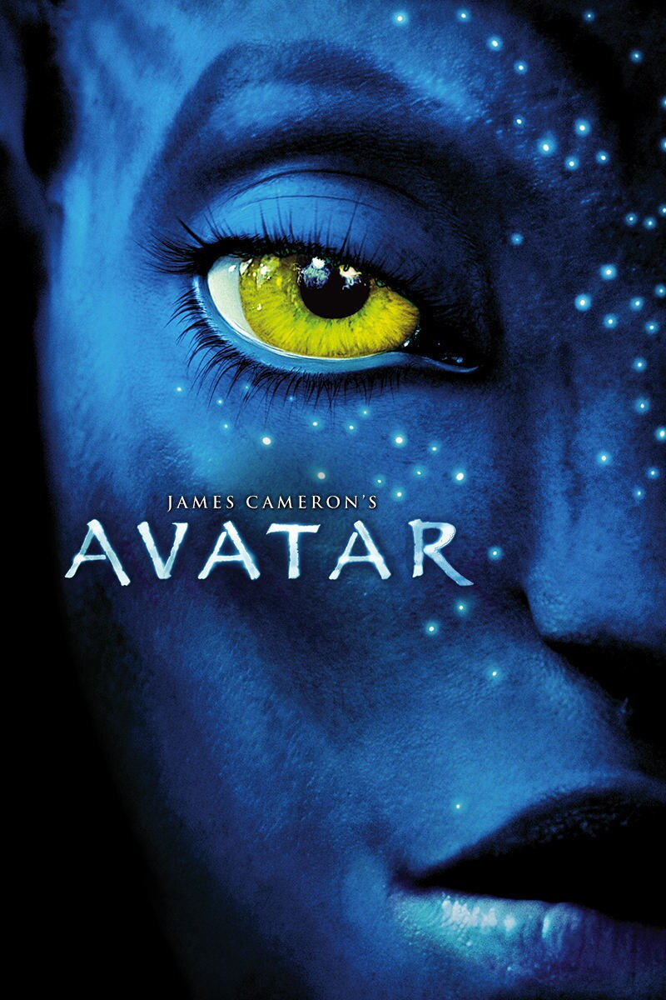

List of courses in Winter 2024-2025
- Web Programming
- Design and Analysis of Algorithms
- Computer Architecture and Organization
- Theory of Computation
- Microprocessors and Microcontrollers
- Probability and Statistics
- Essence of Traditional Knowledge
- Quantitative Skills Practice II
List of programming languages
- Python
- C
- C++
- HTML
- CSS
- Java
- JavaScript
My Favorite Movies
- Interstellar (2014)

- Director: Christopher Nolan
- Cast: Matthew McConaughey, Anne Hathaway, Jessica Chastain
- Genre: Science Fiction, Drama
- Plot: Set in a near-future Earth, facing environmental collapse. A group of astronauts, led by Cooper (McConaughey), journey through a wormhole in search of a new habitable planet for humanity. Themes of love, time, sacrifice, and survival are central to the story. The film incorporates real scientific theories, particularly about black holes and relativity. Stunning visual effects, especially the depiction of space and distant planets, along with Hans Zimmer's haunting score, elevate the emotional depth of the film.
- Notable Features: Breathtaking visual effects of space and time dilation, Hans Zimmer's iconic score, and philosophical exploration of love transcending time.
- Inception (2010)

- Director: Christopher Nolan
- Cast: Leonardo DiCaprio, Joseph Gordon-Levitt, Ellen Page
- Genre: Science Fiction, Thriller
- Plot: Dom Cobb (DiCaprio), a skilled thief who specializes in entering people's dreams to steal secrets, is tasked with planting an idea into someone's subconscious in a process known as "inception." The film explores the complex layers of dreams and reality, challenging the audience's perception of time and consciousness. The storyline is a philosophical exploration of grief, guilt, and the nature of reality, while also delivering thrilling action sequences.
- Notable Features: Mind-bending dream layers, thrilling action sequences (like the zero-gravity fight), and a complex narrative structure that blurs the lines between reality and dream.
- Avatar (2009)

- Director: James Cameron
- Cast: Sam Worthington, Zoe Saldana, Sigourney Weaver
- Genre: Science Fiction, Adventure
- Plot: Set on the alien planet of Pandora, *Avatar* follows Jake Sully (Worthington), a paraplegic former Marine who joins the Avatar Program. Using an avatar to control a Na'vi body, Jake immerses himself in the world of the indigenous Na'vi people. As he becomes more deeply connected with their culture and environment, he must decide whether to side with the human invaders exploiting the planet or fight to protect the Na'vi from destruction.
- Notable Features: Revolutionary 3D and visual effects, world-building of Pandora, themes of environmentalism and colonialism, and the relationship between Jake and Neytiri (Saldana).